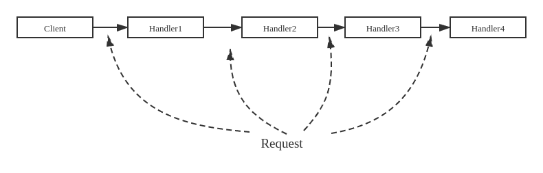

基于接口组合应对复杂变化
已有资源的组合
使用已有资源的常用方式
继承、组合、模板实例化（泛型编程）
优先使用 组合 而不是 继承，因为组合比较灵活，但如果新代码里的对象和原有代码的对象有天然的包含关系，则应该使用继承来复用代码。
以栈为例
实现栈类型——FILO表
-
其实例能够组织多个同类型数据
-
后进先出
-
提供四个操作：
push,pop,top,empty -
先实现整数的栈
一种方式是可以通过维护原始数组的方式构造一个栈类；
该栈类的需求与std::vector的push_back, pop_back, back, empty提供的功能类似，在实现上只需在std::vector的基础上封装一层接口即可。
引入接口
将接口以纯虚函数的形式定义在抽象类里面，由子类去实现。
使用的时候调用接口类，以此保证使用方式不变。
如此某个类的使用者和开发者的工作被完全隔离开。
假设按照如下UML实现基于std::vector的Stack：
这里VectorStack类是一个 转接类 ，功能类似于thunder3转USB的转换头。
适配器模式
适配器模式：对于功能满足需求，但接口不一致的情况，定义一个Adapter类使用组合实现适配。
这里的适配器使用“组合”实现，也可以用“继承”实现。
多重继承
除了“组合”之外，还可以使用“多重继承”实现VectorStack
class VectorStack : public Stack, private vector<int> {
public:
VectorStack() : vector<int>() {}
bool empty() { return vector<int>::empty(); }
void push(int i) { push_back(i); }
void pop() { pop_back(); }
int top() { return back(); }
};
由于多重继承是否合理尚存争论，实际中不存在此实现。
C++假设程序员知道自己在干什么，所以在功能上提供了多重继承
使用继承实现适配，称作 类Adapter，UML如下
接口不变时的功能变化
智能指针与代理模式
考虑多个指针指向相同的物理地址，当其中一个指针释放的时候，其他的指针变成了野指针。这里出现的根本问题是指针之间互相不知道对方的存在。
引用计数
问题上述问题，需要跟踪基础对象被多少指针所共享，直到引用计数为 0 时才真正释放基础对象。
“智能指针”模板
#include <bits/stdc++.h>
using namespace std;
template <typename T>
class SmartPtr;
template <typename T>
class UPtr { // 设计一个辅助类用作SmartPtr实体的共享计数
private:
friend class SmartPtr<T>;
UPtr(T* ptr) : p(ptr), count(1) {}
~UPtr() { delete p; }
int count;
T* p;
};
template <typename T>
class SmartPtr {
public:
SmartPtr(T* ptr) : rp(new UPtr<T>(ptr)) {}
SmartPtr(const SmartPtr<T>& sp) : rp(sp.rp) { // 拷贝构造，引用计数++
++rp->count;
}
SmartPtr& operator=(const SmartPtr<T>& rhs) {
++rhs.rp->count; // 将rhs的引用计数++
if (--rp->count == 0)
delete rp; // 原来指向对象的引用计数--，为零则释放基础对象
rp = this.rp; // 执行实际赋值操作
return *this;
}
~SmartPtr() {
if (--rp->count == 0)
delete rp; // 析构函数，引用计数--，为零则释放基础对象
}
// 重载指针操作符 * 和 ->
T& operator*() { return *(rp->p); }
T* operator->() { return rp->p; }
private:
UPtr<T>* rp;
};
// 使用智能指针，无需考虑释放问题
int main(int argc, char* argv[]) {
SmartPtr<int> ptr1(new int(2));
SmartPtr<int> ptr2(ptr1);
SmartPtr<int> ptr3 = ptr2;
cout << *ptr1 << endl;
*ptr1 = 20;
cout << *ptr2 << endl;
}
输出
2
20
智能指针分析
SmartPtr<int>和int*有相同的接口- 操作符：
*和-> - 赋值操作符与初始化（拷贝构造）
- 释放（析构）
- 操作符：
SmartPtr<int>比int*增加了一些控制操作- 拷贝构造时引用计数
++ - 析构时引用计数
--，直到引用计数为零时释放 - 赋值时对当前引用计数和参数引用计数分别处理
- 拷贝构造时引用计数
- 这种方式被称为 代理模式
- 以
SmartPtr的赋值操作符=为例- 首先做一些"其他操作"
- 然后执行了
int*的赋值操作 - 在
int*的赋值操作基础上增加了更多功能
- 接口不变，功能变化
- 常被称为 代理模式
- 用于对被代理对象进行控制，如引用计数控制、权限控制（被代理对象是否可以被访问）、远程代理（将对远程对象的操作代理到本地对象）、延迟初始化等等。
延迟初始化
有些对象的初始化时间较长，比如需要做数据库连接等。对于这种情况可以等到实际使用的时候再初始化。
延迟初始化经常与引用计数结合使用，减少初始化的次数。
class Proxy : public Object {
public:
Proxy() : object_(nullptr) {} // 代理类对象初始化时不初始化实际对象
~Proxy() {
if (object_ != nullptr) delete object_;
}
void run() { // 实际对象初始化被延迟到调用run函数时进行
if (object_ == nullptr) object_ = new RealObject();
object_->run(); // run函数本来的功能
}
private:
RealObject* object_;
};
int main(int argc, char* argv[]) {
Proxy proxy;
proxy.run();
}
Lazy load的好处：
-
减少初始化时间
-
当和引用计数结合的时候能够节省不必要的初始化过程。（将多个Proxy指向同一个实际对象）
-
有些对象初始化之后不一定被使用，采用lazy load的方式可以减少这种情况下的资源浪费
装饰
从实现一个TextViewer开始
假设现有一个TextView对象，能够在窗口中显示文字。现在希望接口不变，增加滚动条、边框、...

使用继承实现
利用C++中的继承，依靠多态实现功能多样化：
弊端：多种TextView之间没有层次关系，不用的View之间相互独立。由此当需要的附件增多的时候会导致TextView 类体系膨胀 、代码大量冗余。
使用策略模式
用组合替代继承，使用组合动态改变策略以实现多变的功能

策略选项之间相互独立使得组合更加灵活，有效抑制了 类膨胀 问题。
但是，策略选项需要预先定义，无法增加。例如，当我们需要增加一个“工具栏”的时候，需要在TextView大类进行修改，这种操作应该被避免。
装饰模式
在这个问题中，TextView是主体，Border和ScrollBar都是给TextView增加功能的，是附加的。我们可以通过在TextView上“添加装饰”来实现Border和ScrollBar而无需修改TextView。
代码实现
增加一个Component作为可显示内容的基类，TextView作为其子类。而所有的 装饰类 都是可显示的，也就都是Component的子类。
对于不同的装饰类，实现不同的装饰能力。
class Component {
public:
virtual ~Component() {}
virtual void Draw() = 0;
};
class TextView : public Component {
public:
void Draw() { cout << "TextView." << endl; }
};
class Decorator : public Component {
public:
Decorator(Component* component) : component_(component) {}
virtual void Addon() = 0;
void Draw() {
Addon();
component_->Draw();
}
private:
Component* component_;
};
class Border : public Decorator {
public:
Border(Component* component) : Decorator(component) {}
void Addon() { cout << "Bordered "; }
};
class HScroll : public Decorator {
public:
HScroll(Component* component) : Decorator(component) {}
void Addon() { cout << "HScrolled "; }
};
class VScroll : public Decorator {
public:
VScroll(Component* component) : Decorator(component) {}
void Addon() { cout << "VScrolled "; }
};
使用时对TextView进行逐层装饰，可以灵活得到不同的显示效果
int main(int argc, char** argv) {
TextView text_view;
VScroll vs_text_view(&text_view);
HScroll hs_vs_text_view(&vs_text_view);
Border b_hs_vs_text_view(&hs_vs_text_view);
b_hs_vs_text_view.Draw();
}
输出：
Bordered HScrolled VScrolled TextView.
装饰模式与策略模式
装饰模式 和 策略模式 都通过对象的组合修改对象的功能（表现），以组合的方式代替继承使用更灵活。
不同点
| 策略 | 装饰 |
|---|---|
| 修改对象功能的内核 | 修改对象功能的外壳 |
| 组件必须了解有哪些需要选择的策略 | 组件无需了解有哪些可以装饰的内容 |
装饰模式与代理模式
装饰模式 和 代理模式 都用来改变对象的行为。
可以把 装饰 看做一连串的 代理
-
装饰
- 为被装饰对象增加额外行为
- 不影响被装饰对象的原有功能
- 不创建被装饰对象，只是将新功能添加到已有对象上
- 经常多嵌套装饰
-
代理
- 常用来对被代理对象进行更精细的控制
- 被代理对象不存在时创建被代理对象
- 少见多重嵌套
责任的传递与责任链
装饰器的使用成一种链式调用关系，每层对象无需了解整个链的全貌，只需知道“下一个”对象是谁即可。
责任链
将一系列的处理者连城一条链，将请求沿着这个链传递并由链上的处理着予以处理

一个邮件过滤器
设置过滤器：根据发件人、根据主题、根据关键字等
实现
定义请求
class MailRequest {
//...
public:
string GetSender();
string GetTitle();
string GetBody();
string GetAll();
void Accept() { reject_ = false; }
void Reject() { reject_ = true; }
bool IsReject() { return reject_; }
private:
bool reject_;
};
定义“处理者”，“处理者”用DoHandle()做“分内之事”，如不成功再将轻轨去传递给后续的处理者
class Handler {
public:
Handler(Handler* successor) : successor_(successor) {}
virtual ~Handler() {}
virtual bool DoHandle(MailRequest* request) = 0;
void Handle(MailRequest* request) {
if (!DoHandle(request)) {
if (successor_ != nullptr) successor_->Handle(request);
}
}
private:
Handler* successor_;
};
实现各种过滤器逻辑
class SenderFilter : public Handler {
public:
SenderFilter(Handler* successor) : Handler(successor);
bool DoHandle(MailRequest* request) {
if (IsWhite(request->GetSender())) {
request->Accept();
return true;
}
if (IsBlack(request->GetSender())) {
request->Reject();
return true;
}
return false;
}
};
class TitleFilter : public Handler {
public:
TitleFilter(Handler* successor) : Handler(successor) {}
bool DoHandle(MailRequest* request) {
if (!IsValid(request->GetTitle())) {
request->Reject();
return true;
}
return false;
}
};
class BodyFilter : public Handler {
public:
BodyFilter(Handler* successor) : Handler(successor) {}
bool DoHandle(MailRequest* request) {
for (auto s : invalid_texts) {
if (request->GetBody().find(s) != string::npos) {
request->Reject();
return true;
}
}
return false;
}
private:
vector<string> invalid_texts = {"text1", "text2" /*, .....*/};
};
一般在责任链末端有一个缺省的处理者
class DefaultFilter : public Handler {
public:
DefaultFilter(Handler* successor) : Handler(successor) {}
bool DoHandle(MailRequest* request) {
request->Accept();
return true;
}
};
责任链的产生从链尾到链头反向声明，使用责任链时只要把处理请求交给责任链开始的处理者即可。
int main(int argc, char* argv[]) {
DefaultFilter f1(nullptr);
BodyFilter f2(&f1);
TitleFilter f3(&f2);
SenderFilter f4(&f3);
MailRequest* request = GetRequest();
f4.Handle(request);
if (request->IsReject()) {
cout << "Rejected." << endl;
} else {
cout << "Accepted." << endl;
}
}

与装饰、代理对比
责任链与装饰
两者都有“调用链”，责任链强调的是链整体的行为，而装饰则更强调调用链带来的组织结果。
具体而言，责任链不一定调用到底，可能在某一环得到结果；但装饰链一定调用到底，每一环都会起作用。
责任链与代理
责任链也可以看作一连串代理。
代理强调控制被代理对象，改变对象的行为；责任链则组织多个对象的行为。
小结
本部分考虑如何将小的程序模块组合成一个完整的项目。
适配器模式 - 功能满足，接口改变。 - 应用举例： 用std::vector实现的Stack类。
代理模式 - 接口不变，功能增加（控制逻辑） - 应用举例：智能指针。
- 代理模式 和 委托模式 的关系： 委托 强调主类把功能交出去，代理 则强调在主类执行前执行一些特别操作。
装饰器模式 - 在可新模块上叠加一系列附加功能。 - 应用举例：TextViewer加滚动条和工具栏
责任链模式 - 对对象执行一系列的任务，可能终止于任何一环。 - 应用举例：邮件过滤器
另外注意标准库和开源代码的使用。